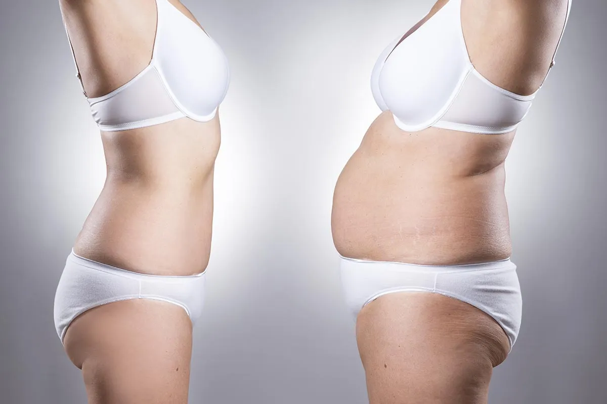
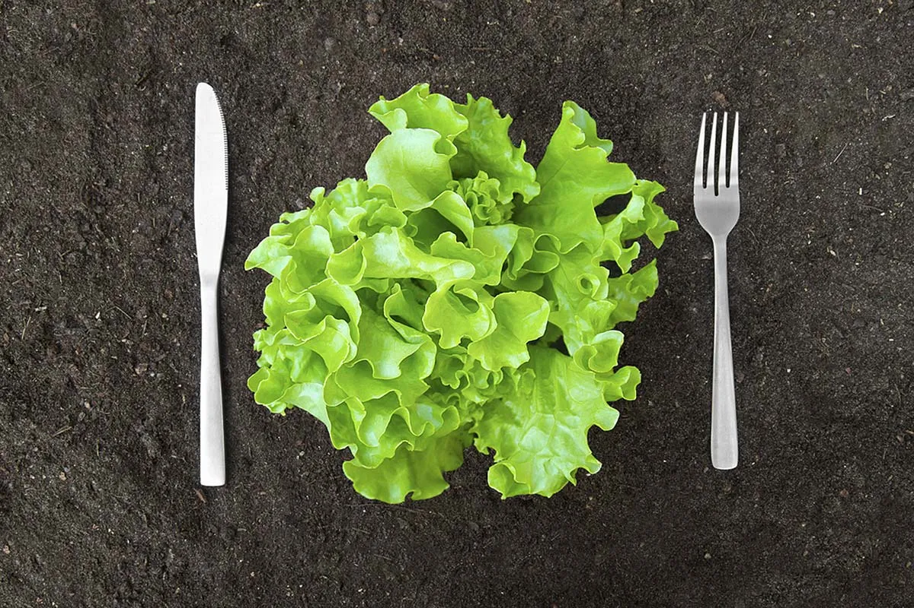

У женщин лептин может повышаться после менопаузы — что является одной из причин набора веса. Фактически это выражается в том, что им становится сложнее бороться с чувством голода. В свою очередь, интервальное голодание (и диета 16/8) — способы нормализации уровня этого гормона.
Лептин — что это?
Лептин — это ключевой гормон энергетического обмена. Он влияет как на чувство голода, так и на чувство насыщения при употреблении пищи. Поскольку местом синтеза этого гормона является жировая ткань, благодаря лептину мозг получает информацию о том, сколько именно энергии запасено в организме.По сути, гормон лептин (наравне с гормоном грелином) — регулятор аппетита. Нормальный уровень этих гормонов сообщает мозгу о том, что энергии достаточно. В свою очередь, снижающийся лептин является сигналом того, что энергия заканчивается — и нужны калории.
Отличием грелина является то, что уровень грелина зависит от приемов пищи (перед едой его уровень выше, а после еды — ниже), а уровень лептина — от количества клеток висцерального жира. По сути, чем больше внутреннего жира в организме, тем выше уровень гормона лептин.
Где вырабатывается?
Лептин вырабатывается в висцеральном жире, скелетной мускулатуре и в слизистой желудка. Другими словами, его уровень зависит как от уровня физической активности человека (и восприимчивости мышц к инсулину) — так и от соблюдаемого питания.Факторами повышения лептина могут являться избыточное количество висцерального жира, отказ от пищи на продолжительный период (более 16-20 часов), баланс БЖУ рациона, курение, нарушения работы щитовидной железы, падение уровня тестостерона (у мужчин).
Почему повышен и что делать?
 В организме здорового человека стабильный уровень лептина сообщает мозгу о том, что в жировых клетках находится достаточный запас энергии. Однако при разрастании висцерального жира работа обмена веществ дает сбой — мозг начинает полагать, что человеку постоянно необходимы калории.Кроме этого, выработка лептина тесно связана с резистенцией тканей к инсулину — говоря простыми словами, она влияет на способность организме перерабатывать и усваивать углеводы правильным образом. Результат избытка (или недостатка) лептина — нарушения аппетита и проблемы с работой обмена веществ.
Высокий лептин — как понизить?
 Регулярное употребление больших доз быстрых углеводов (в том числе сахара, сладких фруктов, хлеба, сладостей, выпечки, белого риса, картофеля) является ключевым фактором, нарушающим нормальный обмен веществ в целом и метаболизм лептина в частности.Постепенно мозг привыкает к хронически высокому уровню глюкозы в крови, снижая как чувствительность к инсулину, так и к лептину. Исследования говорят о том, что повышенный лептин зачастую является первый сигналом на пути к развитию у человека сахарного диабета второго типа.
В свою очередь, при сахарном диабете нарушается способность организма правильно использовать энергию углеводов из пищи, в результате чего тело пытается как можно быстрее избавиться от калорий, запасая их в жир.
Интервальное голодание и правильная диета
Для того, чтобы понизить уровень лептина и вернуть способность организма адекватно реагировать на инсулин, требуются как регулярные физические тренировки, так и практически полный отказ от быстрых углеводов — однако без резкого ограничения калорийности питания.Наиболее простой диетой в этом случае является кето диета, подразумевающая отказ от углеводов. Также для понижения уровня гормона может использоваться интервальное голодание — например, по схеме 16/8 (носящей название “диета 16/8”)
Рацион для понижения лептина должен строится на обилии в питании клетчатки (прежде всего, различных зеленых овощей и цельных круп), нежирного мяса, а также большого количества правильных растительных жиров. При этом употребление сладостей должно максимально ограничиваться.